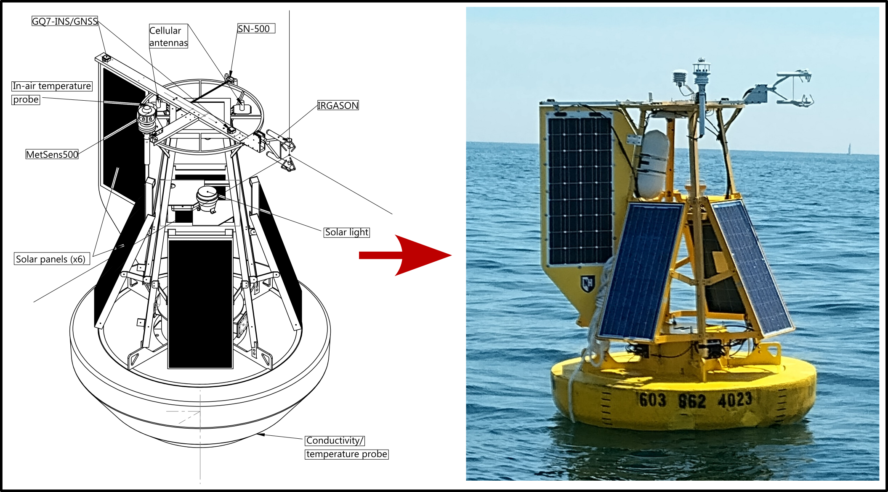
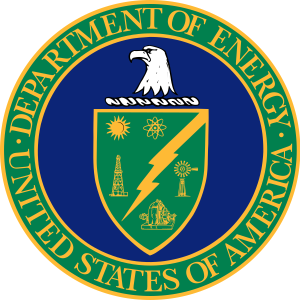

A meteorological buoy was instrumented to calculate air-sea fluxes of momentum and sensible & latent heat in real time. It has been lovingly dubbed "IRGIE", shorthand for the IRGASON (infrared gas analyzer + sonic anemometer) that serves as the workhorse for the turbulent velocity, temperature, and humidity measurements required to compute these fluxes. As of Summer 2025, the buoy is now equipped with a Nortek Signature1000, enabling observations of the vertical profile of current.

Interactive time series of the latest 10-minute products (wind, momentum and heat fluxes, waves, temperature, stability, battery & solar power, depth-averaged currents, humidity), summary scatterplots of direct vs. bulk fluxes, and the latest EWDM directional wave spectrum with wind and current arrows. Pan/zoom with the mouse; click legend entries to hide a series. Open full-page version.
